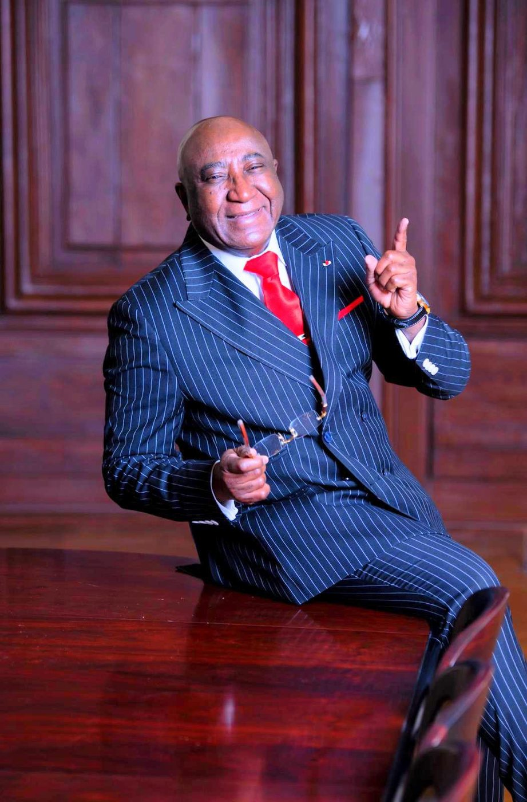
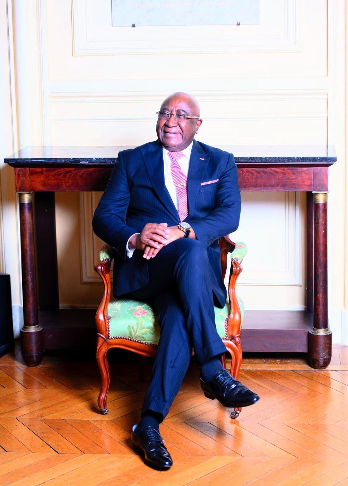
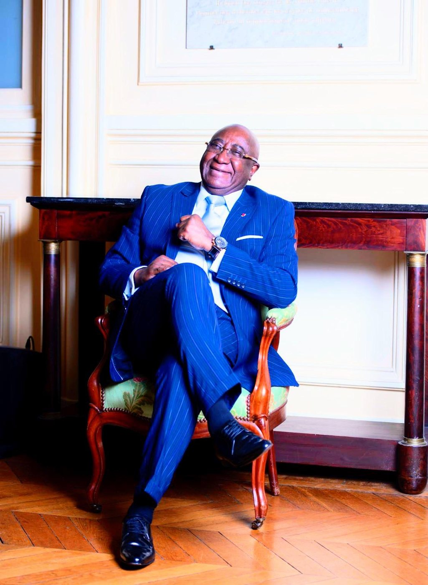

Conseil & intelligence économique
Études et informations socio-économiques et politiques fiables, pour sécuriser vos décisions d'investissement sur le continent africain.
En savoir plus →Entreprise de promotion des affaires et des investissements en Afrique — depuis 1996
Fondée par l'Ambassadeur Dr Cheick KEITA, Open Business Africa accompagne investisseurs, institutions et entrepreneurs dans leurs projets entre l'Afrique, l'Europe et les Amériques : conseil, intelligence économique, partenariats et entrepreneuriat.

Une présence mondiale
Année de fondation du réseau CIDIGA, à l'origine d'OBA
Continents fédérés — Afrique, Europe, Amériques
Pays représentés au sein du cercle d'investisseurs
D'expérience en relations économiques internationales



Notre mission
Open Business Africa accompagne les investisseurs et partenaires internationaux dans leurs projets en Afrique : conseil, intelligence économique, partenariats et entrepreneuriat. OBA offre la meilleure opportunité d'entrée pour sécuriser durablement vos investissements sur le continent.
Convaincue que tous les acteurs économiques africains doivent prendre conscience de leur interdépendance, OBA fédère les expertises et les savoir-faire qui permettent à l'Afrique de se développer en bonne intelligence — au bénéfice de ses partenaires comme de ses territoires.
Nos missions
Études et informations socio-économiques et politiques fiables, pour sécuriser vos décisions d'investissement sur le continent africain.
En savoir plus →La meilleure opportunité d'entrée pour sécuriser votre investissement, appuyée sur un réseau international de chefs d'entreprise et d'investisseurs.
En savoir plus →Mise en relation entre entreprises du Sud et du Nord pour la création de structures de transformation locale et d'unités industrielles.
En savoir plus →Accompagnement des jeunes entreprises africaines innovantes et promotion d'une véritable culture de l'entrepreneuriat sur le continent.
En savoir plus →Nous sommes convaincus que tous les acteurs économiques africains doivent prendre conscience de leur interdépendance.Ambassadeur Dr Cheick KEITA
Le fondateur
Président fondateur d'Open Business Africa. Titulaire d'un Master en droit public, l'Ambassadeur Dr Cheick KEITA a construit plus de trente ans d'expérience dans les relations économiques internationales entre l'Europe, la Méditerranée, l'Afrique et le Caucase — au sein d'institutions telles que le Crédit Agricole, la BBVA, l'OCDE ou la Direction Générale des Finances Publiques.
Depuis 1996, il préside la CIDIGA (Chambre d'Initiatives pour le Développement des Investissements des Groupements en Afrique), à l'origine du réseau Open Business Africa. Il est également fondateur de Bridge Of Innovations (B.O.I.), président de l'Observatoire Panafricain du Numérique pour le Développement (OPND), et ambassadeur de l'IHRC pour l'Afrique.

Notre réseau
Chambre d'Initiatives pour le Développement des Investissements des Groupements en Afrique — cercle d'investisseurs présents dans huit pays.
Identifie les start-up africaines innovantes et les accompagne grâce à un réseau de business angels et de fonds de capital-risque.
Observatoire Panafricain du Numérique pour le Développement, dédié aux technologies au service du développement africain.
International Human Rights Commission — l'Ambassadeur Dr Cheick KEITA en est le représentant pour l'Afrique depuis 2017.
World Union of Small and Medium Enterprises — union mondiale des PME, dont l'Ambassadeur Dr Cheick KEITA est ambassadeur.
Premier réseau panafricain de business angels, engagé aux côtés d'OBA pour faciliter les investissements en Afrique.
Le continent
Le réseau Open Business Africa travaille au service du continent tout entier, de Conakry à Nairobi et du Caire au Cap.